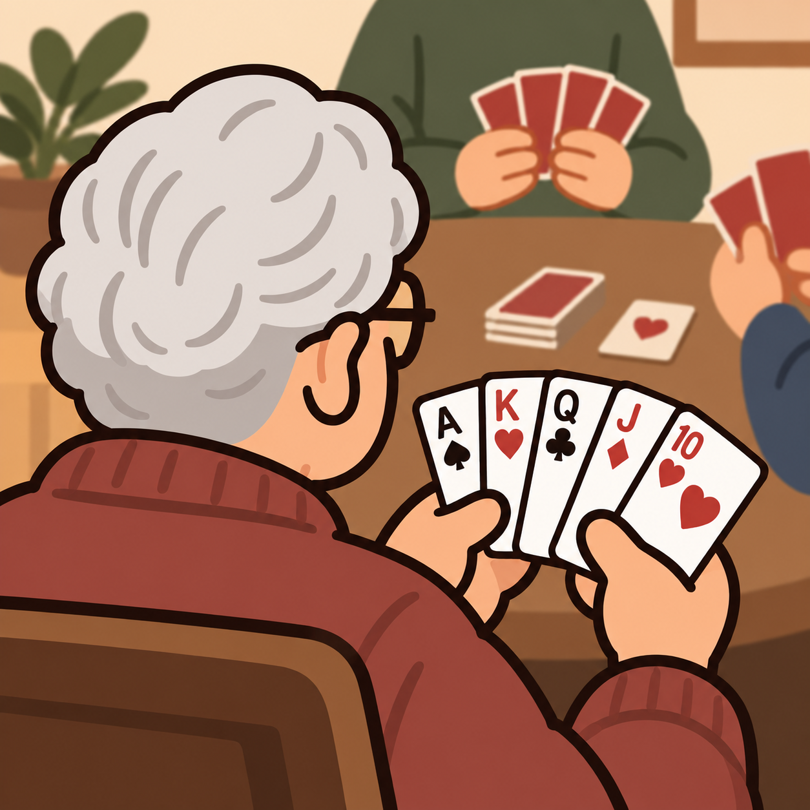
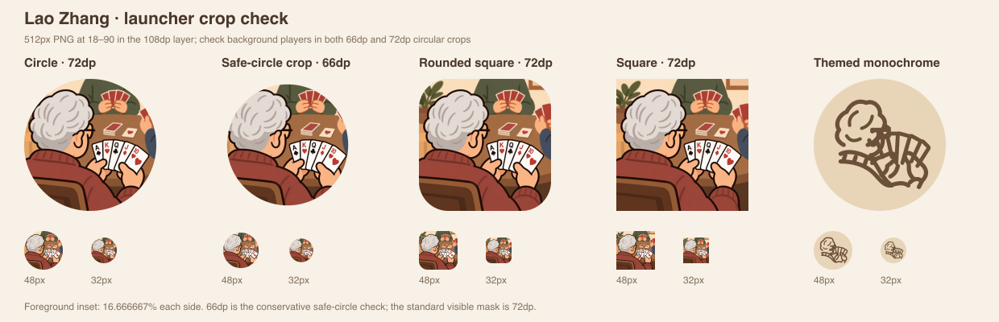

选定图标根据参考图重新绘成暖色粗线插画：短银发、侧眼镜和红棕毛衣，双手握住五张扇形扑克牌。彩色应用图标采用 PNG，主题图标另绘同姿态的单色矢量轮廓；其余五个方向保留为 SVG 备选。

从左后方肩后看老张：短银发、侧耳与方眼镜，双手自然握住五张扇形牌。米色牌桌与两位简化的对手营造熟悉的牌室氛围。
三张扇形扑克牌呼应三位玩家。简洁冠章体现斗地主规则，中央红心作为清晰焦点。
单张金色卡牌，黑桃是透明镂空。对比强、主体大，适合作为最简洁的替代方向。
酒红圆角印章与矢量「斗」字呈现熟悉的中式牌室气质。字形由线条绘制，设备字体不影响显示。
三个玩家节点围坐一张椭圆牌桌。强调坐下来玩一局的亲切感，适合牌室的整体视觉。
银发与粗线方眼镜组成抽象肖像，搭配一枚红心。比完整人物更简省，但人物亲切感稍弱。
